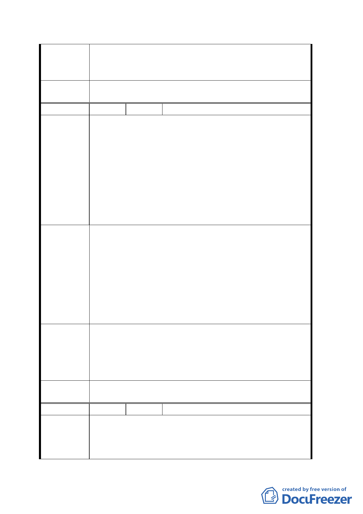

94.4.14 專案小組會議結論：
同意發展局所提方案、範圍，有關河川區徵收由市府另
行辦理。
委員會決
議
同意依專案小組 94.4.14 審查結論辦理。
編 號 １２ 陳情人 周照壽
建議位置：文山區富德段三小段全部地號
建議理由：
1. 細部計畫作業中，請充分考量本區住戶居民及地主過去
為台北市建設所犧牲配合的一切，請市府能以回饋的心
陳情理由
2.
態做出有利於當地的權益措施。
文山區將來空中纜車行徑若規劃不當，將使萬福橋下游
日後商業區被「邊緣化」而無法達到「結合」鄰近遊樂
休憩之目的。
3. 為恐日後捷運商圈集團勢力介入，依據 82 年堤線藉機
變更使用與水爭地，侵犯現有法定滯洪區。
1. 懇請適度提高容積率至百分之二百五時仍可符合低密
度商業區之需求。百分之百認同本次主要計畫案變更之
政策。
2. 懇請市府都發局慎重綜合評估如何確保日後遊客能自
建 議 辦 法 然進入本商圈符合規劃之意義與顯現政府的德政。
3. 為確保本計畫完成後居民生命財產永久安全，懇請貴會
「明確」督促市府永久遵守動物園河川地停車場用地應
永久作為平面使用，避免洪水來臨無調節水患，滯洪功
能失敗。
1. 本案容積率維持 160%。
專 案 小 組 2. 建議事項非屬都市計畫範疇，留供規劃單位作業參考。
結 論 3. 建議事項非屬都市計畫範疇，留供市府及規劃單位參
考。
委員會決
議
同意依專案小組審查結論辦理。
編 號 １３ 陳情人 周仁元
建議位置：文山區富德段三小段 313.314.315.316 地號
陳情理由
建議理由：
1. 上述四筆土地均目前編入保護區為私有土地，請納入本
計畫案，以維整體規劃。
一○